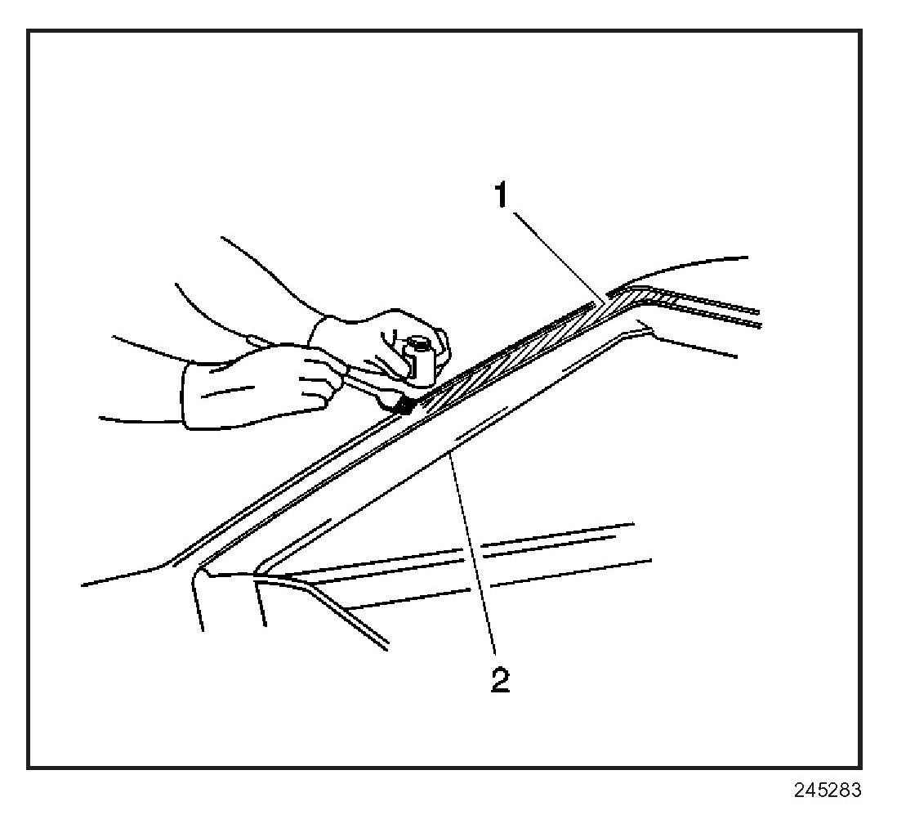

Basecoat/Clearcoat Paint Systems
Basecoat/Clearcoat Paint SystemsCAUTION:
- Exposure to isocyanates during paint preparation and application processes can cause severe breathing problems. Read and follow all of the instructions from the manufacturers of painting materials, equipment, and protective gear.
- Approved safety glasses and gloves should be worn when performing this procedure to reduce the chance of personal injury.
All paint finish repairs of rigid exterior surfaces must meet GM standards. The GM Approved Refinish Materials book GM P/N GM4901M-D-2004 identifies the paint systems you may use. Always refer to the latest revision of the 4901M-D book. All approved products, including volatile organic compound (VOC) compliant regulations are listed in the system approach recommended by the individual manufacturer. Refer to the manufacturer's instructions for the detailed procedures for materials used in the paint system in the painting repairs of rigid exterior surfaces. All components of an approved paint system have been engineered in order to ensure proper adhesion between layers.
If necessary, spot repairs or color blending in an open panel can be done. However, do not blend clearcoat in an open panel. Always apply clearcoat to the
next break point (body side molding, feature line, or the next panel.)

Do not mix paint systems or substitute a product of one manufacturer for another manufacturer's product. If incompatible products are used together the following problems may occur:
- Lifting of primer coats caused by overly aggressive solvents in subsequent layers
- Loss of adhesion between layers due to incompatibility of resin systems
- Solvent popping or pinholing due to inappropriate solvent selection
- Poor through-curing due to incompatible hardener resins or insufficient reactivity
- Gloss reduction due to incompatible resins and/or solvents
- Poor color accuracy due to pigment interactions with incompatible resins and/or solvents
- Film defects (craters, blisters, orange peel loss of gloss) due to the use of inferior quality raw materials in incompatible products